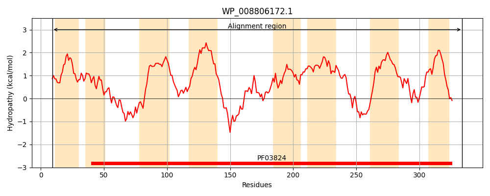
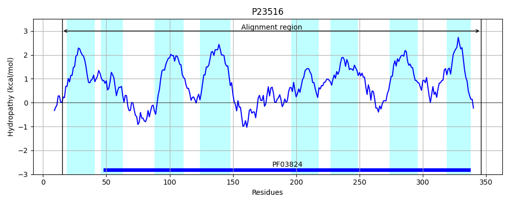
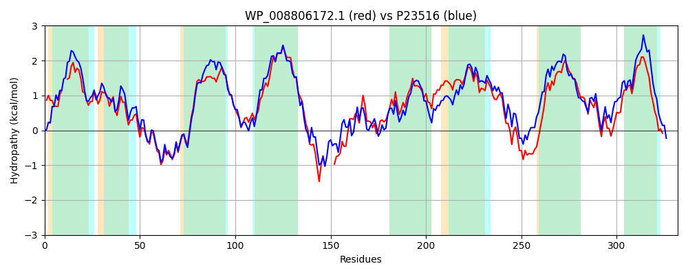

Hit Accession: P23516
Hit TCID: 2.A.52.1.1
Hit Description: gnl|BL_ORD_ID|9436 gnl|TC-DB|P23516|2.A.52.1.1 HIGH-AFFINITY NICKEL TRANSPORT PROTEIN - Alcaligenes eutrophus (Ralstonia eutropha).
Mach Len: 332
e:0.000000
Query TMS Count : 8
Hit TMS Count: 8
TMS-Overlap Score: 6.850000
Predicted Substrates:CHEBI:25517;nickel(2+)
BLAST Alignment:
Score: 966 , Bit scores: 376 bits, E-value: 9.7e-131, Alignment length: 332, Percentage identity: 57
Query: 9 QPRAAGLVLG--LIAANLLAWCWALQAFGDSGALMAASLLAWGYGLRHAVDADHIAAIDNVTRKMMQQGRRPFAVGAWFSLGHSSIVVLASAAIAATATAFSAQMSWLHDTGSVIGTAVSALFLLAMAFINLVILRSVWRSFRAWKRG----EKVSDEIVSGGGVMSWLFGKTFRLVSRSWQMYLVGFLFGLGFDTATEIGVLGISAAGASSGISVWSIMVFPALFASGMALVDTLDNVLMVGAYGWAFSKPQRKLYYNMTITGTSVVVALFIGGLEALGLLMDKFALSGGIWRWVGMLNDNLGDAGFVVVGLFVACWALSVLNYRWRGYDN 334
+PRA ++L LIA N+ AW AL AF D L+ +LLA+G GLRHAVDADH+AAIDNVTRK+MQ GRRP G WFSLGHSS+VVLAS IA AT ++ H+ GSVIGT SALFL A+A INLVILRS +R+FR +RG E+ D + G ++ +F FR ++RSW MY +G LF LGFDTATE+ +LGIS AS G+ +WSI+VFPALF +GMAL+DT+D++LM GAY WA++KP RKLYYNMTIT S +VAL +GG+E LGLL DKF L G W VG LN+N GFV++G+F CW +S++ YR R YD+
Sbjct: 15 RPRAKIILLYALLIAFNIGAWLCALAAFRDHPVLLGTALLAYGLGLRHAVDADHLAAIDNVTRKLMQDGRRPITAGLWFSLGHSSVVVLASVLIAVMATTLQERLDAFHEVGSVIGTLASALFLFAIAAINLVILRSAYRAFRRVRRGGIYVEEDFDLLFGNRGFLARIFRPLFRFITRSWHMYPLGMLFALGFDTATEVALLGISTMEASRGVPIWSILVFPALFTAGMALIDTIDSILMCGAYAWAYAKPVRKLYYNMTITFVSAIVALIVGGIETLGLLADKFMLKGVFWNAVGALNENFCQLGFVIIGIFTVCWVVSIVVYRLRRYDD 346 | Protein Hydropathy Plots: |
|---|
|  |  |
Pairwise Alignment-Hydropathy Plot:
|
|---|
|  |